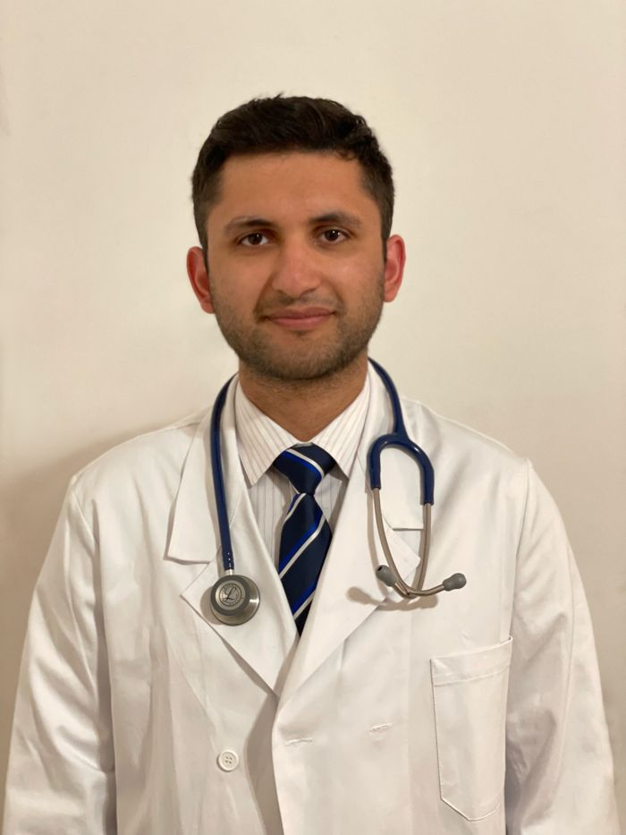

Your Doctor Abroad was started for expats, remote workers, and travelers across Europe, Africa, Asia and Latin America who've felt the specific stress of getting sick far from home — unfamiliar clinics, language barriers, and no idea who to trust. We built this service around one goal: hassle-free, convenient urgent care, wherever you happen to be.
We connect you with licensed doctors who understand remote care across these regions, so you get a real consultation and a clear plan without navigating an unfamiliar system alone — whether that's over video or at one of our in-person clinics. And we're constantly growing into new countries.

Dr. Muhammad Tayyab Altaf is an Italian board-certified primary care physician and a graduate of the University of Pavia in Italy, offering online consultations to patients across the European Economic Area and beyond. Multilingual and with a diverse clinical background, Dr. Altaf provides comprehensive care for a wide range of health concerns, from acute illnesses to chronic condition management.
Dr. Altaf trained at leading institutions, including IRCCS Policlinico San Matteo in Pavia, Italy — founded in 1449 and recognized as one of the oldest and largest teaching hospitals in the country — and has furthered his expertise at Mount Sinai Hospital in New York, Baptist Hospital in Texas, and a private practice in Dallas, USA. His experience spans general practice, intensive care, ambulatory outpatient care, nursing home management, and inpatient hospice care.
Actively practicing across multiple institutions, Dr. Altaf combines hands-on clinical experience with a strong research background in both medical and surgical fields. He is dedicated to delivering holistic, patient-centered care — focusing on accurate diagnosis, effective treatment, and clear patient education, so patients and their families are well-informed and supported in making the best healthcare decisions.
He is available for online primary care consultations, providing accessible, high-quality medical guidance wherever you are.
Learn more about Policlinico San Matteo → View full profile & book with Dr. Altaf →We're always looking for licensed physicians who want to practice telemedicine or register their physical clinic with us.